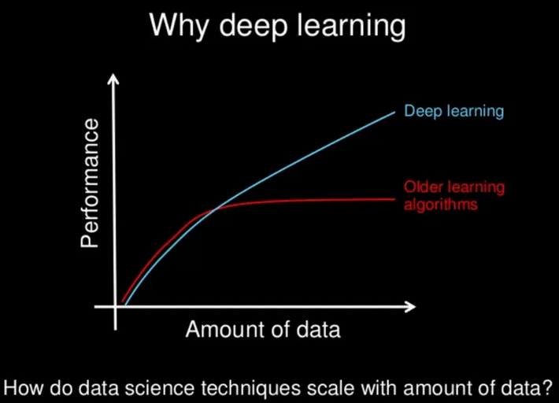

Deep Learning
Qu'est-ce que le Deep Learning ?
Le deep learning ou l’apprentissage automatique est un ensemble de méthode de l’apprentissage automatique qui s'appuie sur un réseau de neurones artificiels s'inspirant du cerveau humain. Ce réseau est composé de dizaines, voire de centaines de « couches » de neurones, chacune recevant et interprétant les informations de la couche précédente. Le système apprendra par exemple à reconnaître les lettres avant de s'attaquer aux mots dans un texte ou détermine s'il y a un visage sur une photo avant de découvrir de quelle personne il s'agit. Il s'agit d'un domaine qui a permis des progrès importants et rapides dans les domaines de l'analyse du signal sonore ou visuel et notamment de la reconnaissance faciale, de la reconnaissance vocale, de la vision par ordinateur, du traitement automatisé du langage.
.png)
.png)
.png)
.png)
.png)
.png)
Chaque neurone artificiel représenté dans l’image précédente par un rond, peut être vu comme un modèle linéaire. En interconnectant les neurones sous forme de couche, nous transformons notre réseau de neurones en un modèle non-linéaire très complexe.
.png)
.png)
.png)
.png)
.png)
.png)
Pour illustrer le concept, prenons un problème de classification entre chien et chat à partir d’image. Lors de l’apprentissage, l’algorithme va ajuster les poids des neurones de façon à diminuer l’écart entre les résultats obtenus et les résultats attendus. Le modèle pourra apprendre à détecter les triangles dans une image puisque les chats ont des oreilles beaucoup plus triangulaires que les chiens.
A quoi sert le Deep Learning ?
Les modèles de Deep learning ont tendance à bien fonctionner avec une grande quantité de données alors que les modèles d’apprentissage automatique plus classique cessent de s’améliorer après un point de saturation.
Au fil des années, avec l’émergence du big data et de composants informatiques de plus en plus puissant, les algorithmes de Deep Learning gourmands en puissance et en données ont dépassé la plupart des autres méthodes. Ils semblent être prêt à résoudre bien des problèmes : reconnaître des visages, vaincre des joueurs de go ou de poker, permettre la conduite de voitures autonomes ou encore la recherche de cellules cancéreuses.
Le Deep Learning comme solution dans le e-commerce
Il est évident que le secteur du commerce électronique génère de grandes quantités de données. Les entreprises, les commerçants et les distributeurs sont conscients que les solutions de Big Data pour gérer leurs opérations rendront leur activité plus précieuse. Malgré l’irruption de toutes ces solutions innovantes, le Big Data peut représenter une bénédiction ou une malédiction, selon la façon dont il est utilisé et appliqué.
La révolution de l’intelligence artificielle vise à faciliter la gestion de cette énorme quantité de données, grâce à des technologies intelligentes comme le Deep learning. Elle est essentielle, car elle fournit des éléments pour une meilleure analyse des données.
Dans un cas pratique, l’analyse par l’IA permet à une boutique en ligne de proposer plus facilement des produits intéressants à ses clients, de mettre en évidence leurs préférences et de leur apporter une attention personnalisée. Pour ce faire, le Deep learning automatise ce que l’on appelle l’analyse prédictive. Grâce à cette dernière, les clients peuvent recevoir des suggestions lors d’un achat.
L’apprentissage profond définit un style lorsqu’il s’agit de faire du commerce électronique. En effet, il ne s’agit pas de créer des sites en ligne qui attirent de grandes proportions d’acheteurs. L’objectif est d’envoyer des messages clairs et individualisés à chacun d’eux.
Le Big Data est soumis à une analyse approfondie grâce au Deep learning, ce qui conduit à faciliter le processus d’achat des clients. Les algorithmes d’apprentissage en profondeur aident l’entreprise à obtenir une meilleure expérience et à garder une trace de ceux qui ont visité son site.
L’apprentissage profond arrive pour faciliter l’expansion du commerce électronique. Les ventes en ligne sont stimulées par les tendances technologiques telles que les chatbots.
D’une certaine manière, le Deep Learning redéfinit le commerce en ligne et on n’est qu’aux balbutiements. Par conséquent, ceux qui l’adoptent auront plus d’avantages.
Ressources:
- Statquest
- Machine Learnia
- Freecodecamp
- Tech with tim
- Daniel Bourke
- Sklearn Documentation
- Geeksforgeeks
- OpenClassroom
- Hands-On Machine Learning with Scikit-Learn and TensorFlow